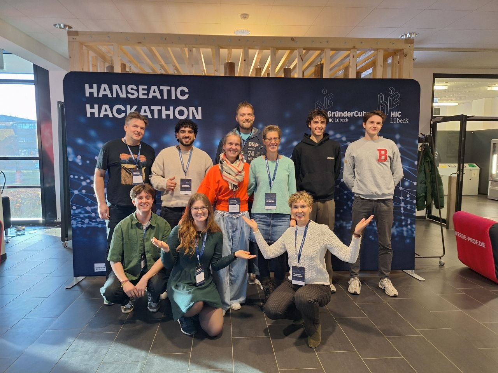
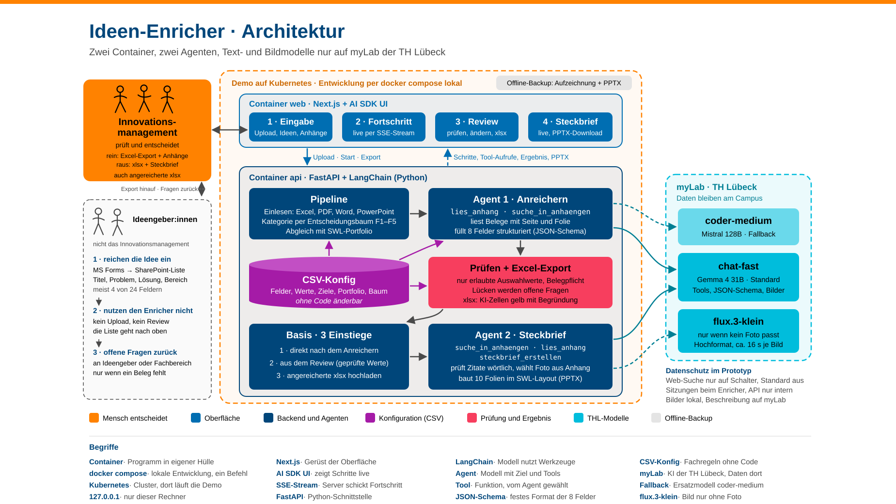
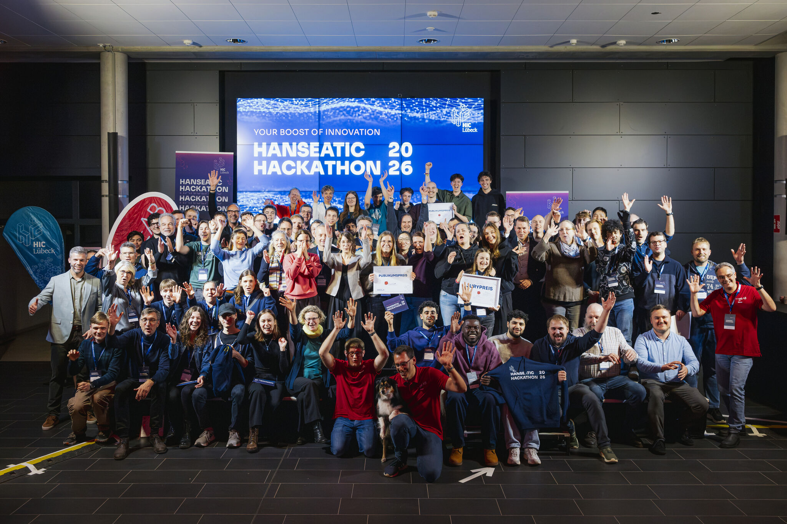
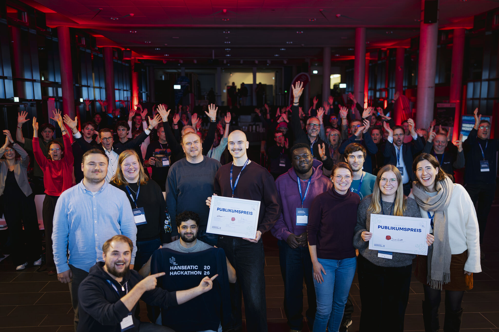

KI Stammtisch · #WdKI2026
48 Stunden, echte Cases, Uni-Infrastruktur
Martin Mueller
13./14.11.2026 · Bauforum TH Lübeck
Deck: mmuller88.github.io/presentations/ki-stammtisch-hanseatic-2026/
Agenda
Hook
Format
Ort
13./14.11.2026 · Bauforum E2 (Hauptort) · Parken P8 · myLab · Orga HIC
Google Maps — Campus-Übersicht · KML für eigene My Map: hackathon-luebeck-2026.kml
Cases 2026 (1/2)
Quelle: HIC Programm 2026
Cases 2026 (2/2)
Gebaut: Team Hanse an Case 2. Vorbereitung: Wunsch Duve, Backup Greif-Velox.
Case
Team

Zeitplan
| Fr 13.11. | |
|---|---|
| 09:45 | Einlass Bauforum |
| 10:30 | Cases / Auswahl |
| 11:30 | Teams & Worklabs |
| 22:00 | Ende Worklabs |
| Sa 14.11. | |
| 09:00 | Weiterbauen |
| 16:00+ | Finale / Pitches |
| ~18:15 | Abendessen & Austausch |
Freitag Abend fast fertig · Samstag Polish + Story
Infrastruktur
flux.3-klein nur als ErsatzbildDocs: wiki.mylab.th-luebeck.de
Tooling
Erlaubt / sinnvoll
mylabapi.mylab.th-luebeck.de/ai/v1coder-large, chat-fastVorsicht
json_schema hing (guided decoding), function_calling liefLösung
Prämie, Personen, IDs und Termine füllt die KI nie. Kategorie läuft über den Entscheidungsbaum, der Pfad bleibt sichtbar.

Demo
Live wäre pnpm dev:all, Modell chat-fast, Ordner Beispieldokumente. Offline-Aufnahme liegt im Repo.
Learnings
| chat-fast · Gemma 4 31B | coder-medium · Mistral 128B | |
|---|---|---|
| Zeit je Idee | 13 s | 80 s |
| ohne Fehler | 10 / 10 | 9 / 10, ein Timeout |
| ungültige Auswahlwerte | 0 | 0 |
| Felder mit Beleg aus Anhang | 83 % | 85 % |
Transfer
Verbesserung · Jury & Fairness
Abschluss


Fazit
Für mich: ja. Ein Wochenende reicht für einen prüfbaren Prototyp, wenn der Case echte Dateien mitbringt und die Modelle schon laufen.
Mehr Material: Dropbox Conference/2026/Nov_13_14_Luebeck-Hackathon/
KI Stammtisch · #WdKI2026
martinmueller.dev · LinkedIn /in/martinmueller88